模型的檢視與除錯
March 5, 2022有時候一些程式碼，只想在預覽階段時執行，這時可以透過 $preview 特殊變數，在預覽階段它的值會是 true，若執行渲染的話值會是 false。例如：
if($preview) {
...預覽階段要執行的流程
}
在建立模型的過程中，經常要做許多基本模型的組合，然而，在預覽時左看右看，可能就是看不到想檢視的細節，這時該怎麼辦呢？
裝飾字元
舉個例子來說，在〈圖形布林運算〉看過怎麼建一個愛心：
radius = 20;
module heart(radius) {
half_r = radius / 2;
little_c_r = half_r * sqrt(2);
circle(radius, $fn = 4);
translate([half_r, half_r])
rotate(45)
circle(little_c_r);
translate([-radius / 2, radius / 2])
rotate(45)
circle(little_c_r);
}
heart(radius, $fn = 8);
這個模型是由一個邊數為四的正多邊形與兩個圓形組合而成，如果想分別檢視正方形或圓形，可以在模型前放個 # 突顯字元（highlight character），將模型以紅色突顯出來，例如：
radius = 20;
module heart(radius) {
half_r = radius / 2;
little_c_r = half_r * sqrt(2);
#circle(radius, $fn = 4);
#translate([half_r, half_r])
rotate(45)
circle(little_c_r);
#translate([-radius / 2, radius / 2])
rotate(45)
circle(little_c_r);
}
heart(radius, $fn = 8);
這樣就會看到以下的畫面：
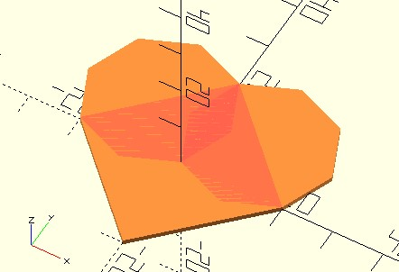
如果想建立一個中空球：
radius = 10;
thickness = 1;
module hollow_sphere(radius, thickness) {
inner_radius = radius - thickness;
difference() {
sphere(radius);
sphere(inner_radius);
}
}
hollow_sphere(radius, thickness);
當然，看不到球的內部，若想檢視內外兩球體的差異，可以使用 % 透明字元（transparent character），被標示的模型會以半透明顯示，例如：
difference() {
%sphere(radius);
sphere(inner_radius);
}
這樣就可以看出內外兩個球體了：
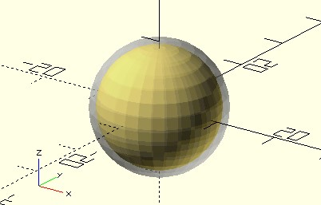
有時候只想看看模型中某個子模型，例如，在〈圖形布林運算〉談過在球體上放個字母：
character = "A";
font_size = 10;
thickness = 1;
sphere(font_size);
intersection() {
sphere(font_size + thickness);
linear_extrude(font_size * 2)
text(character,
size = font_size, // 文字大小
valign = "center", // 垂直置中
halign = "center" // 水平置中
);
}
如果只想看看其中這段的效果呢？
linear_extrude(font_size * 2)
text(character,
size = font_size, // 文字大小
valign = "center", // 垂直置中
halign = "center" // 水平置中
);
你可能會想註解掉其他程式碼，這是個方式，不過有點麻煩，其實只要在子模型前頭放個 ! 單獨顯示（show only）字元就可以了：
!linear_extrude(font_size * 2)
text(character,
size = font_size, // 文字大小
valign = "center", // 垂直置中
halign = "center" // 水平置中
);
這樣就只會看到子模型單獨顯示，就上例來說，就是只顯示被擠出的文字：
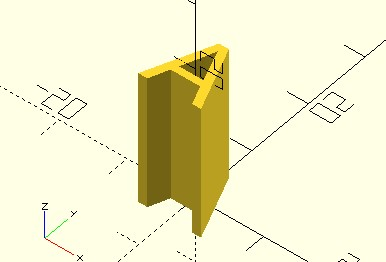
有時候會想要停用某個子模型，看看結果如何，比方說，想停用方才被擠出的文字，使用註解嗎？也可以，不過，得全部加上註解，像是：
// linear_extrude(font_size * 2)
// text(character,
// size = font_size, // 文字大小
// valign = "center", // 垂直置中
// halign = "center" // 水平置中
// );
或者是這樣：
/*
linear_extrude(font_size * 2)
text(character,
size = font_size, // 文字大小
valign = "center", // 垂直置中
halign = "center" // 水平置中
);
*/
兩種方式都有點麻煩，最方便的方式是使用 * 停用字元（disable character），例如：
*linear_extrude(font_size * 2)
text(character,
size = font_size, // 文字大小
valign = "center", // 垂直置中
halign = "center" // 水平置中
);
這樣就可以停用整個子模型的運算了。
「檢視」選單
OpenSCAD 的「檢視」選單有許多選項，其中常用的選項，在模型顯示區下方的工具列就可以使用，隨意地按按看就可以知道各是什麼作用了：
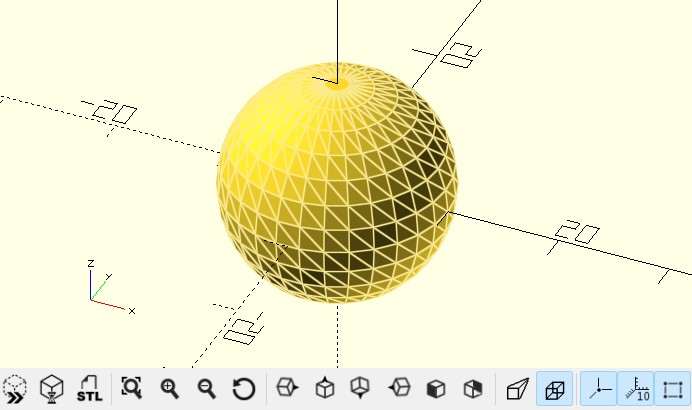
上圖還包含了按下工具列最右方「顯示邊緣」按鈕的效果，也就是預覽時將每個面的邊緣也顯示出來。
在 OpenSCAD 中，3D 物件被 difference 後留下的面，預覽時會以綠色表示，例如：
difference() {
sphere(10);
translate([10, 0, 0])
sphere(5);
}
預覽時會顯示以下結果：
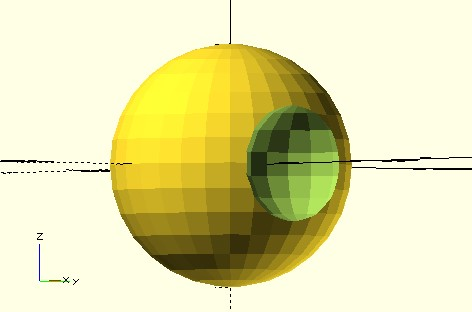
「檢視」選單中有個「拋出所有視圖」（Thrown Together），這會將參與的 3D 物件全部顯示，若是被拿來 difference 的 3D 物件，會以綠色表示，例如以上範例若「拋出所有視圖」，會顯示以下的結果：
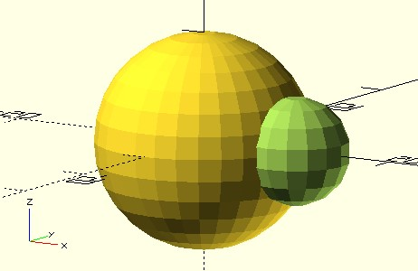
如果使用 polyhedron 指定頂點與面索引，「拋出所有視圖」還有個作用，將面的內外以不同顏色表示，預設朝外的面預設會是黃色，朝內的面會是紫色，OpenSCAD 要求朝外的面索引必須是順時針，如果模型是正確的，其實看不到面的內側，因此若看得到紫色的面，表示那個面的索引反了。
例如在〈polygon 與 polyhedron〉繪製了正四面體，如果故意將其中一個面索引改為逆時針：
module tetrahedron(radius) {
t = (1 + sqrt(5)) / 2;
tetrahedron_points = radius * [
[1, 1, 1], [-1, -1, 1], [-1, 1, -1], [1, -1, -1]
];
tetrahedron_faces = [
[2, 1, 0], // 逆時針
[2, 3, 0], [0, 3, 1], [1, 3, 2]
];
polyhedron(
points = tetrahedron_points,
faces = tetrahedron_faces
);
}
tetrahedron(10);
就會看到出現紫色的面：
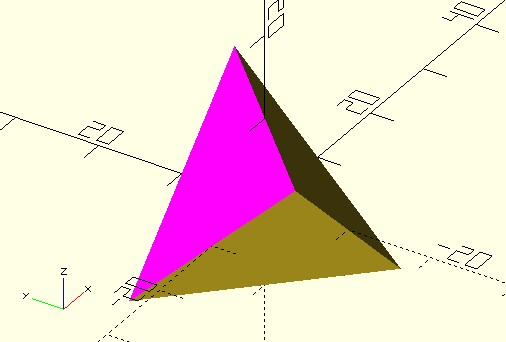
單一模型的面不對，雖然渲染時 OpenSCAD 不會發生錯誤，然而因為網格（mesh）定義不正確，可能無法匯入其他 3D 軟體，或者需要修復網格定義才能使用，在 OpenSCAD 若試圖將面索引不正確的模型，與其他模型結合運算後渲染，也會引發錯誤，例如：
tetrahedron(10);
sphere(10);
在渲染時會發生「ERROR: The given mesh is not closed! Unable to convert to CGAL_Nef_Polyhedron.」的錯誤。
「檢視」選單的「表面」，可以保留上次渲染結果，若渲染後若修改了程式碼，就會回到預覽狀態，這時若想跟上一個渲染結果比較一下就可以使用。
若有多個模型布林運算，「檢視」選單的「線框」，可以在渲染模型後檢視線框，與預覽狀態時「顯示邊緣」功能不同的地方在於，「顯示邊緣」單純就只是預覽時的估算，沒有模型渲染後的網格資訊，你也只看得到「外側」的邊緣，然而「線框」必須在渲染後才能使用，你可以看到渲染後網格的線框。
例如方才中空球的範例，在渲染後檢視「線框」，可以看到中空球內的線框，因為是 difference 後的面，中空球內的線框以綠色顯示：
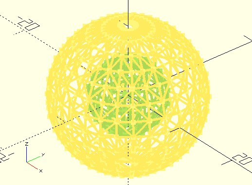
「檢視」選單的「動畫」，可以在 OpenSCAD 建立動畫，這要搭配 $t 特殊變數，例如：
sphere(10);
rotate($t * 360)
translate([30, 0, 0])
sphere(5);
$t 會是個 0 到 1 的數字，數字怎麼變化的話，要視執行「檢視」選單的「動畫」後顯示的工具列設定而定：
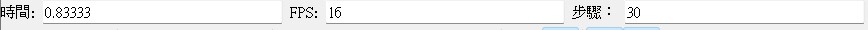
工具列上只要設定兩個部份「FPS」與「步驟」，前者是每秒影格數（frame per second），後者用來設定每個影格間繪製時的 $t 遞增「1 / 步驟」，例如，FPS 設為 1 的話，每秒重新執行一次程式，「步驟」設為 30，表示每次 $t 遞增 1/30，若超過 1，回到 0 重新遞增，工具列右邊的「時間」在設置「FPS」與「步驟」後，就會開始變化。
想繪製動畫的話，程式碼中要做的，就是將 $t 對應至參數變化，就上圖的設定而言，可以看到以下的動畫效果：
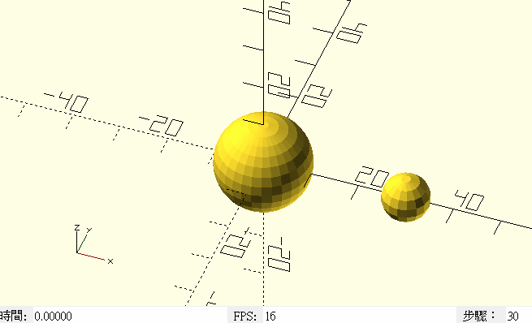
動畫工具列的最右方有個「轉存圖片」，在動畫過程中若選取，它會將 $t 從 0 到 1 變化的過程中繪製的畫面，使用圖片檔存下來。
預覽破圖
有些模型預覽會產生破圖，例如：
character = "A";
font_size = 10;
thickness = 1;
intersection() {
sphere(font_size + thickness);
linear_extrude(font_size * 2)
text(character,
size = font_size, // 文字大小
valign = "center", // 垂直置中
halign = "center" // 水平置中
);
}
這會產生以下的預覽：
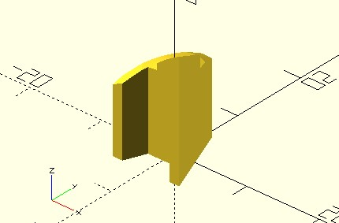
預覽終究是預覽，沒有渲染後完整的網格資訊才會如此，你可以把上面的預覽想成，OpenSCAD 仍然以文字擠出時的凸面資訊，來計算與球面交集後預覽，結果就是有些面無法正確地預覽。
OpenSCAD 有些模組可以設置 convexity 參數，通常是建立後的模型可能有凹凸面的模組，如果模組有 convexity 參數可以使用，可以試著設為較大的值，例如，將上例的 linear_extrude(font_size * 2) 改為 linear_extrude(font_size * 2, convexity = 10)，就可以正確地預覽：
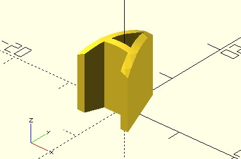
OpenSCAD 建議可以由 10 開始設置，較高的 convexity 會對預覽造成負擔，然而也只會影響預覽，對渲染沒有影響。
如果 convexity 沒辦法解決預覽時的破圖問題，那就只能渲染了，雖然可以按下 F6 執行渲染，不過這會渲染整個模型，若只是某個子模型破圖，可以在該模組前加上 render()，只渲染該模組。例如：
character = "A";
font_size = 10;
thickness = 1;
render()
intersection() {
sphere(font_size + thickness);
linear_extrude(font_size * 2)
text(character,
size = font_size, // 文字大小
valign = "center", // 垂直置中
halign = "center" // 水平置中
);
}
// 以下還有其他模型的建立
...
echo、assert
OpenSCAD 沒有除錯器（debugger），若想檢視變數值，就只有最傳統的作法，依賴 echo 將變數值顯示出來，可以指定多個值顯示，並以逗號區隔，例如：
x = 10;
y = 10;
echo(x, y); // 顯示 ECHO: 10, 20
echo(x = x, y = y); // 顯示 ECHO: x = 10, y = 20
可以看到 echo 裡還可以有 var = value 的指定方式，這對於檢視變數與值的對應有幫助；echo 也可以是個運算式，這是為了能在 function 裡使用，這時只會將後續指定的值傳回，例如：
function foo(a, b) =
let(
x = echo(a = a) a,
y = echo(b = b) b
)
x + y;
/*
ECHO: a = 1
ECHO: b = 2
*/
r = foo(1, 2);
有時你會想要進行斷言，也就是斷定程式到某個流程時，必然是某個狀態，例如變數必須是某個值，這時可以使用 assert：
module foo(r){
assert(r > 0, "r should be greater than 0");
...
}
foo(0); // ERROR: Assertion '(r > 0)' failed: "r should be greater than 0" in file test.scad, line 2
assert 也可以是個運算式，這是為了能在函式裡使用：
function foo(r) =
assert(r > 0, "r should be greater than 0") (2 * PI * r / 1234);
a = foo(0); // ERROR: Assertion '(r > 0)' failed: "r should be greater than 0" in file test.scad, line 2